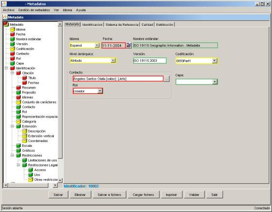

Metadato
En la pestaña metadato
se muestran los datos simples correspondientes a la entidad MD_Metadata del estándar que
permiten aportar información general referente al metadato. Estos datos son:
- Idioma:
Idioma usado para documentar el metadato.
- Fecha:
Fecha en que se crearon los metadatos.
- Nombre del estándar:
Nombre de metadatos usada. Esta predefinida a ISO 19115 Geographic Information - Metadata
- Nivel jerárquico:
Subconjunto de datos al que se refieren estos metadatos.
- Versión:
Versión de la norma de metadatos usada. Esta predefinida a ISO 19115:2003.
- Codificación:
Nombre completo de la norma de codificación de caracteres usada para documentar los metadatos. Esta predefinida a 8859Part1.
- Contacto:
Persona y/u organización con la que se puede contactar para resolver cualquier duda
sobre el metadato. Cuando se pulsa el botón adjunto se muestra la pantalla de contactos donde se puede seleccionar o
crear nuevos contactos
- Rol:
Cargo que ocupa el contacto responsable del metadato.
- Capa:
Este campo esta fuera del estándar y corresponde con la capa
de datos geográficos de LocalGIS con la cual están asociados este conjunto de metadatos.

Pestaña metadato en la pantalla de edición